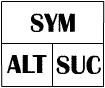

Построение таблично-управляемой программы грамматического разбора.
Конкретные грамматики задаются таблично-управляемой универсальной программе в виде исходных данных, предшествующих предложениям, которые нужно разобрать. Универсальная программа работает в строгом соответствии с методом простого нисходящего грамматического разбора; поэтому она довольно проста, если основана на детерминированном синтаксическом графе, т.е. если предложения можно анализировать с просмотром вперед на один символ без возврата.
В данном случае грамматика (предположим, что она представлена в виде детерминированного множества синтаксических графов) преобразуется в подходящую структуру данных, а не в структуру программы. Естественный способ представить граф – это ввести узел для каждого символа и связать эти узлы с помощью ссылок. Следовательно, "таблица" – это не просто массив. Узлы этой структуры представляют собой структуры (struct) с объединениями (union). Объединение позволяет идентифицировать тип узла. Первый идентифицируется терминальным символом, который он обозначает (tsym), второй – ссылкой на структуру данных, представляющую соответствующий нетерминальный символ (nsym). Оба варианта объединения содержат две ссылки: одна указывает на следующий символ, последователь (suc), а другая связана со списком возможных альтернатив (alt). Графически узел можно изобразить следующим образом

Также нужен элемент, представляющий пустую последовательность, символ "пусто". Обозначим его с помощью терминального элемента, называемого empty.
struct node;
typedef node *pointer;
struct node {
pointer suc;
pointer alt;
int isTerminal;
union {
char tsym;
hpointer nsym;
};
};